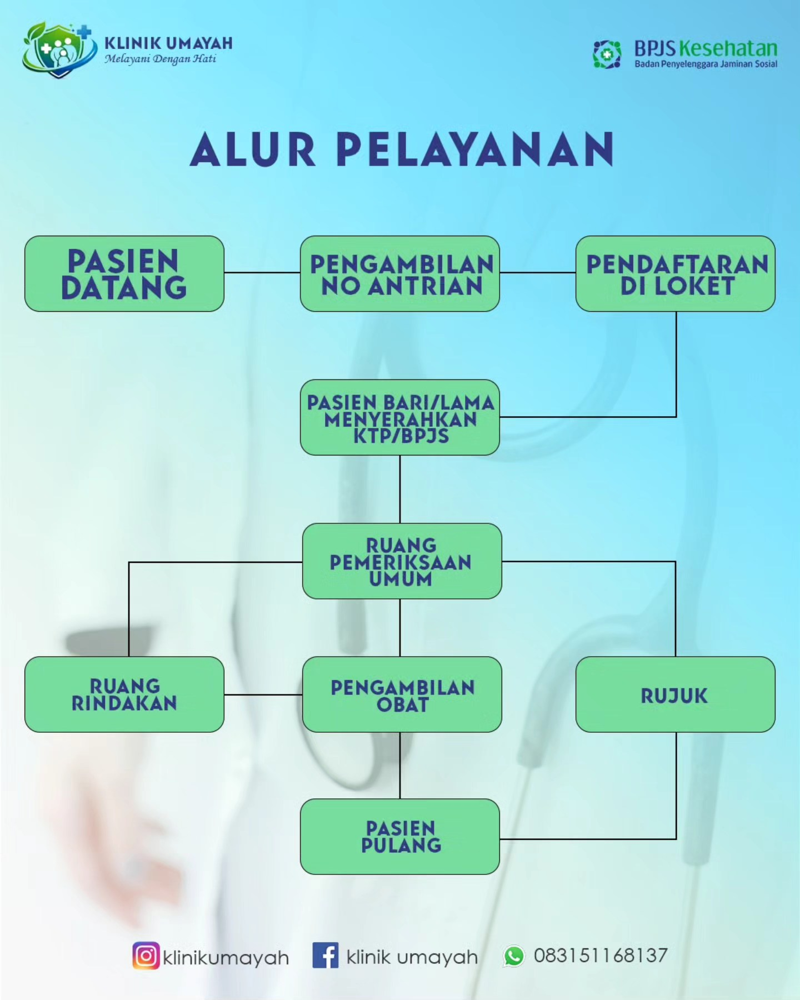
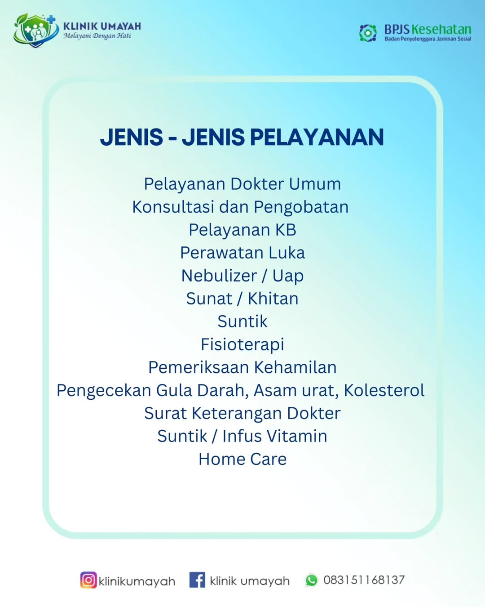

Beranda / Layanan Klinik Kami
pelayanan dokter umum konsultasi dan pengobatan pelayanan kb perawatan luka nebullizer/ uap sunat / khitan suntik fisoterapi pemeriksaan kehamilan pengecekan gula darah, asam urat, kolestrol, surat keterangan dokter suntik / infus vitamin home care.

